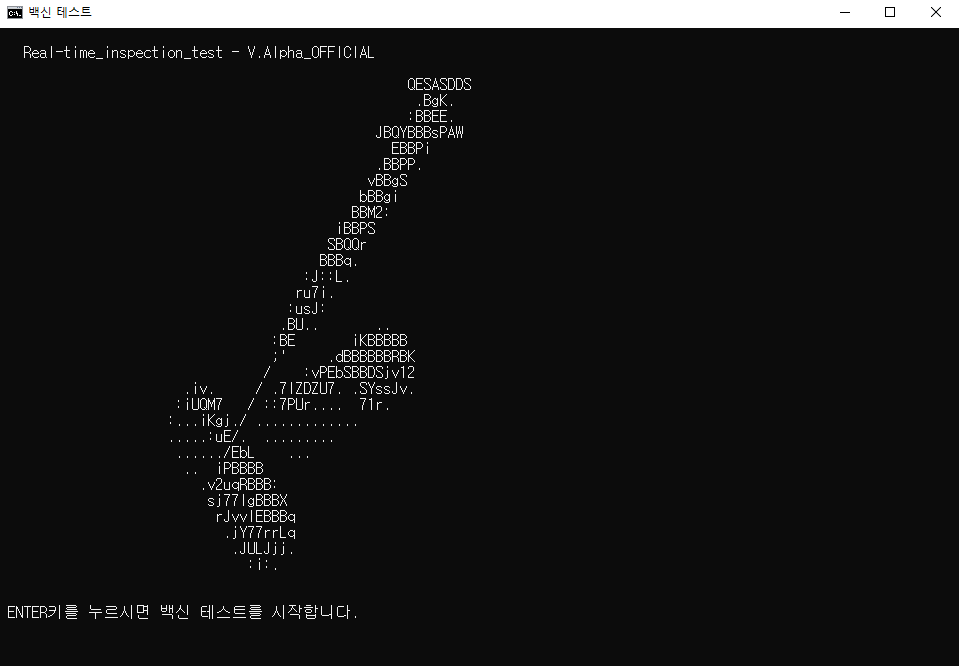
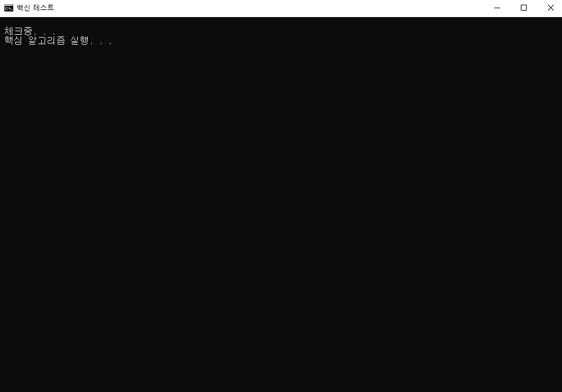
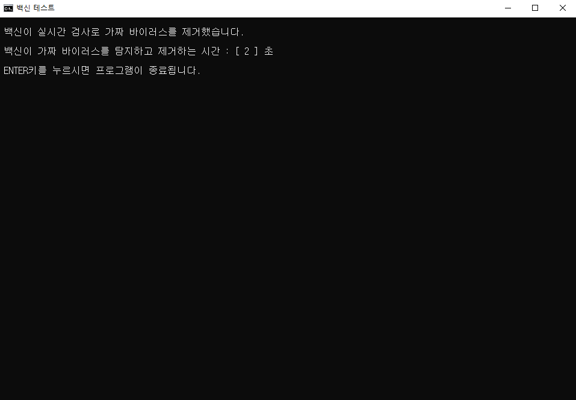
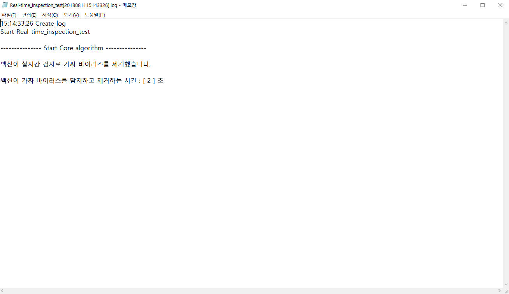
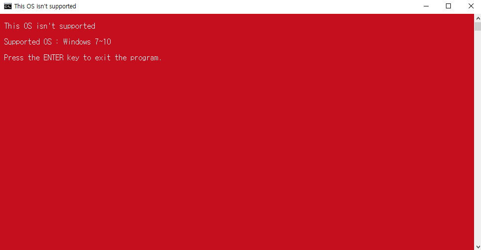
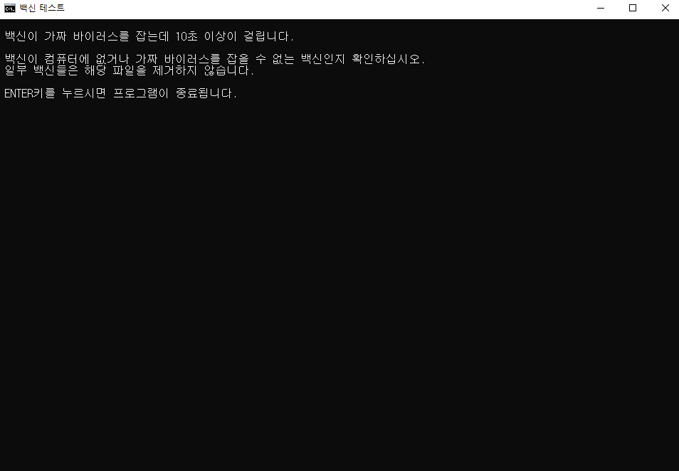
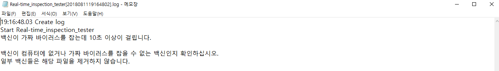
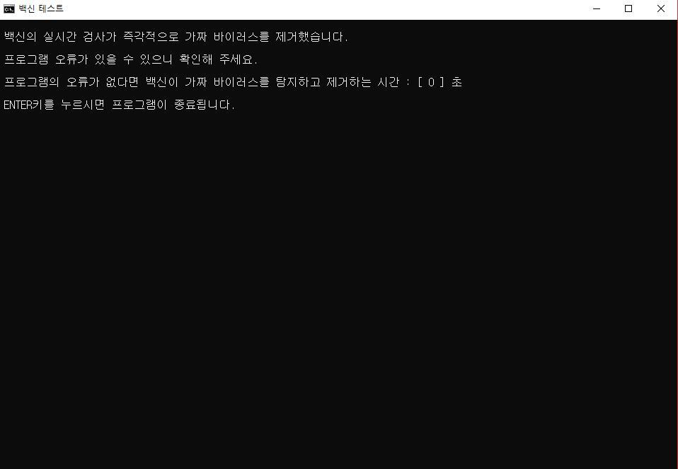
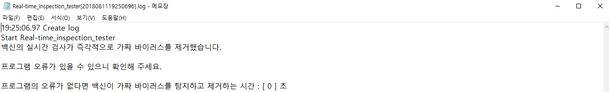

| 1 | LICENCE |
|---|---|
| 2 | Download and Github |
| 3 | Real-time_inspection_test_V.Alpha 가 생성하는 가짜 바이러스 내용 |
| 4 | Real-time_inspection_test_V.Alpha 의 사용법 |
| 5 | Real-time_inspection_test_V.Alpha 의 오류 해결법 |
| 6 | FOLLOW |
LICENCE
이 프로그램은 GNU GPL LICENCE 를 따릅니다.Download
| V.Alpha | Download | Github |
|---|
해당 프로그램이 생성하는 가짜 바이러스(EICAR.TXT) 내용
X5O!P%@AP[4\PZX54(P^)7CC)7}$EICAR-STANDARD-ANTIVIRUS-TEST-FILE!$H+H*
사용법
-

- Real-time_inspection_test_V.Alpha 을(를) 실행합니다.
- 가짜 바이러스(EICAR.TXT)를 생성하고 백신이 파일을 제거하는 동안 기다립니다.
- 백신이 가짜 바이러스(EICAR.TXT)를 탐지하고 제거가 완료되었으면 위 사진의 창이 뜹니다.
- 그리고 자동으로 로그창이 뜹니다. 백신이 가짜 바이러스(EICAR.TXT)를 제거하는 시간은 백신마다 다를 수 있습니다.



프로그램의 오류메시지
위 오류는 Real-time_inspection_test_V.Alpha 가 지원하지 않는 운영체제에서 Real-time_inspection_test_V.Alpha 을(를) 실행하여 생긴 오류입니다.
컴퓨터의 운영체제가 Microsoft Windows 7, Windows 8, Windows 8.1, Windows 10 이 아닌지 확인해 주세요.
 
위 오류와 오류로그는 백신이 10초 내에 가짜 바이러스(EICAR.TXT)를 제거하지 못하여 발생하는 오류입니다. 백신이 없거나 가짜 바이러스(EICAR.TXT)를 알아낼수 없는 일부 백신이 있으므로 이점 유의해 주시기 바랍니다.
 
위 상황은 백신의 성능이 매우 뛰어나 가짜 바이러스(EICAR.TXT)를 생성하자마자 제거한 상황이거나 프로그램의 내부에 오류가 있을때 해당 메시지가 나옵니다.
이곳에서 로그와 배치파일 소스코드와 컴퓨터의 자세한 상황을 알려주세요. 1인 개발이라 늦게 확인 할 수 있으니 이점 유의해 주시기 바랍니다.
|
|
가장 위로